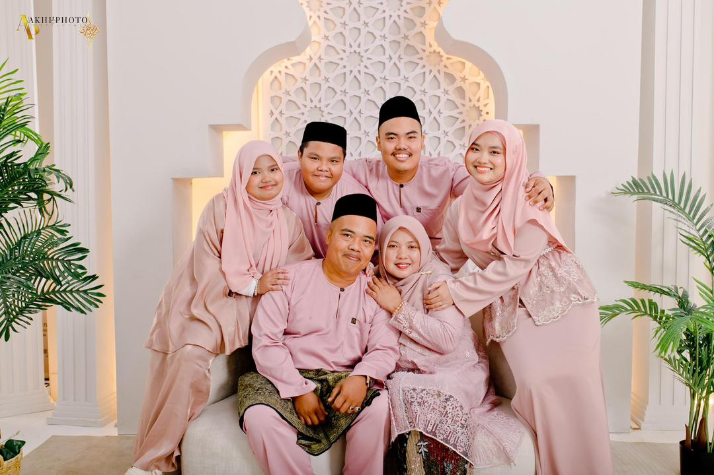
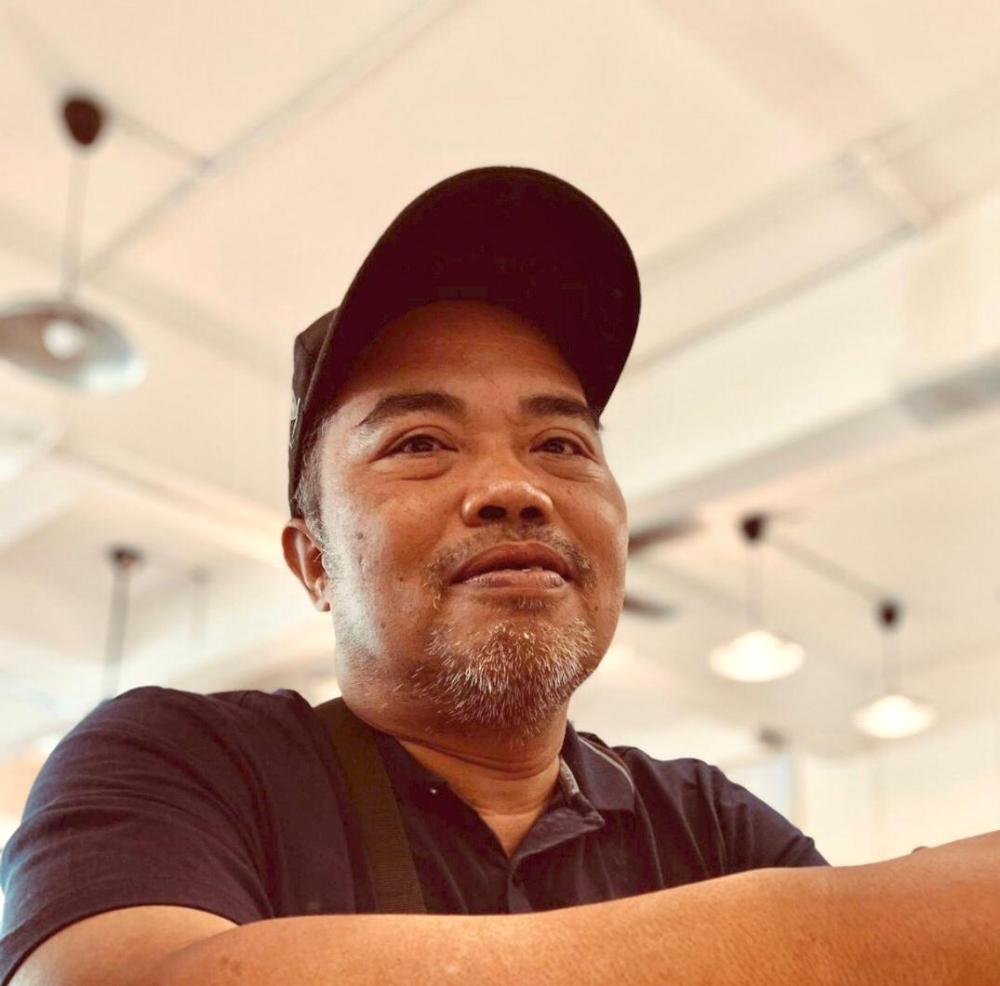
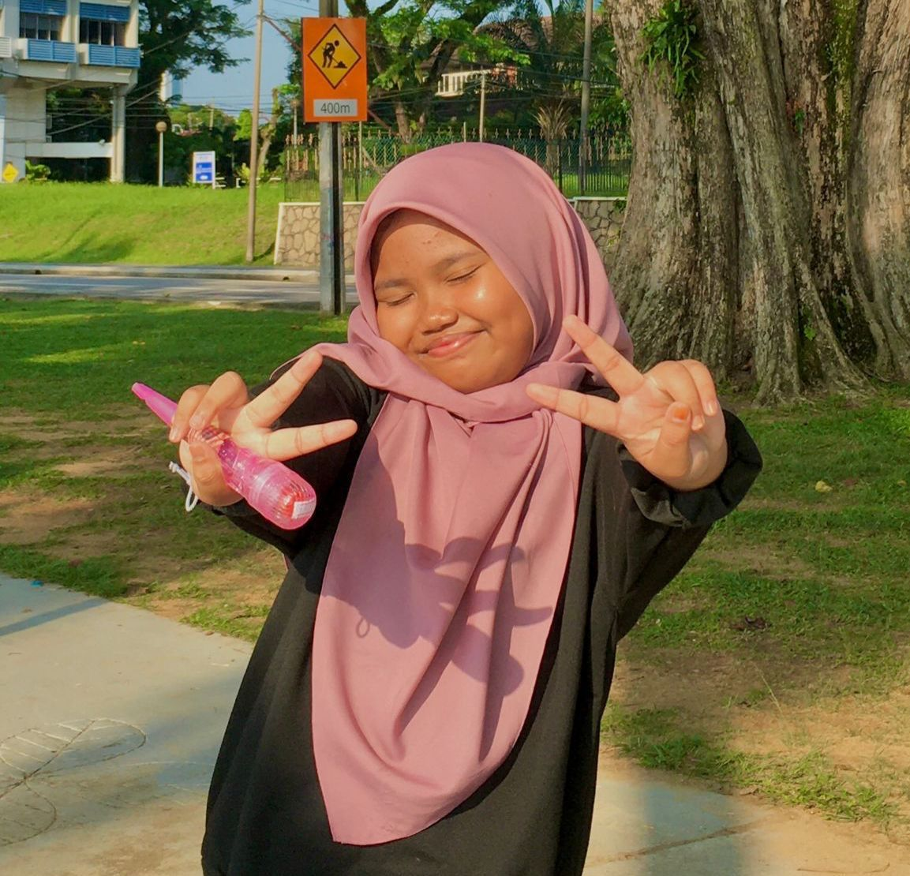

Our FamilyFamily Overview My Father My Mother Sibling NetworkClick any link above to jump instantly to that content row block area |
My Loving FamilyFamily serves as my foundational pillar of endless motivation, guidance, and persistent emotional support. They have taught me important values such as respect, responsibility, and kindness, which help shape the person I am today. The continuous encouragement I receive inspires me to improve myself and confidently achieve my dreams.  My Family Portrait
Meet My Family MembersThe Pillar: My Father
 Name: Kamarul Azwan Bin A.RazakMy dad is the anchor and supportive pillar of our family unit. He works hard every day to provide for us and teaches us the value of discipline, strong work ethics, and perseverance. Whenever I face obstacles in life or my studies, he is always there to guide me. What I appreciate the most is the fact that he never force me to follow what he wants and would accept my decision especially in term of study. The Heart: My Mother
Name: Noraizan Binti Md Noh The Sibling Framework
First Sibling: Eldest Brother
Name: Muhammad Zaaba
Second Sibling: Younger Brother
Name: Muhammad Zaki Aqil
Third Sibling: Younger Sister
 Name: Zara InsyirahThe youngest member of our family, my little sister who is very special to me. She sometimes quiet and shy especially around people she not close with, but when she starts talking about the things she likes, she becomes very talkative. My little sister and I share many of the same interests which helps us become closer and understand each other. She also likes asking me to buy things for her especially items that she finds interesting. Although she can be playful and demanding, she is actually a thoughtful person. |